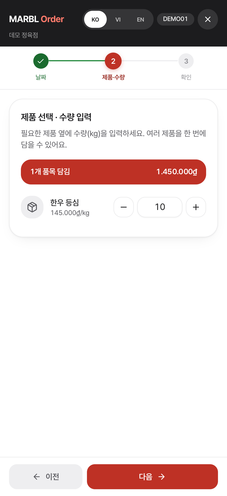
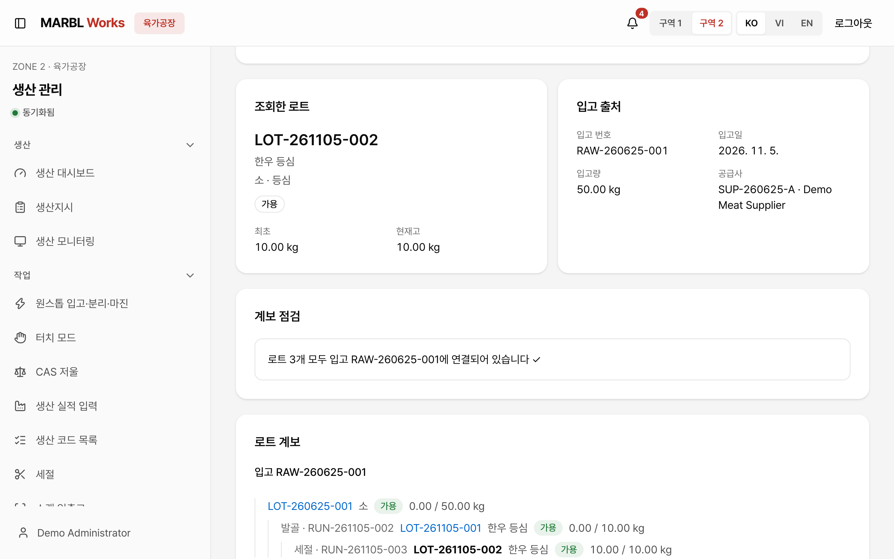

모바일 주문과 사무·생산 관리, 계량 작업을 하나로 연결하는 육가공 B2B 통합관리 시스템입니다. 거래처의 주문이 생산지시와 계량, 출고와 거래명세서까지 같은 흐름으로 이어집니다.
이런 분이 씁니다
육가공 업체의 사무실 직원, 생산 현장 작업자, 출고·배송 담당자, 그리고 휴대폰으로 주문하는 거래처(식당·정육점 등)
풀어낸 문제
주문 정보가 사무실과 생산 현장의 다음 작업으로 이어져야 합니다. 품목과 가공·포장 조건, 작업 상태를 역할마다 같은 주문에서 확인할 수 있어야 합니다.
아이작브릿지 개발 범위
모바일 주문 웹앱, 관리자·생산·배송 화면과 백엔드를 개발했습니다.
주요 기능
- 01
모바일 주문
거래처는 휴대폰에서 날짜, 제품·수량, 확인의 세 단계로 주문하고 수량은 kg 단위로 입력합니다.
- 02
주문 확정
사무실에서 주문 라인과 금액, 거래처와 배송일을 확인해 확정하면 창고 출하 요청으로 이어집니다.
- 03
생산지시
부위와 가공, 포장과 예상 중량을 주문에서 그대로 가져와 현장의 생산지시로 받습니다.
- 04
계량대 작업
계량대 화면에서 원료 LOT와 산출 중량, 담당자를 함께 저장하고 라벨 출력을 안내합니다.
- 05
LOT 추적
원료 입고부터 절단과 포장까지 이어진 LOT의 경로를 kg 단위로 보여 줍니다.
- 06
납품·명세서
출고된 LOT와 수령 결과를 납품서에 남기고, 같은 주문의 수량과 금액으로 거래명세서를 발행합니다.
화면으로 보기


다음 프로젝트Moabi→
비슷한 일을 소프트웨어로 풀고 싶다면, 지금의 상황부터 알려 주세요.
프로젝트 문의하기